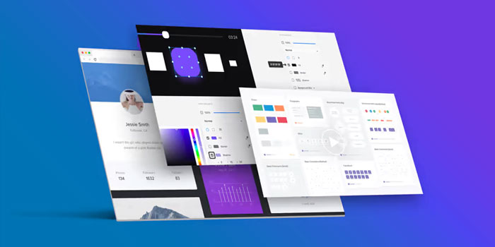

Aprenda a criar o site de seu negócio

Tudo que você precisa saber:
Você provavelmente está lendo aqui por que está pensando em fazer um novo site, se é a primeira vez muitas dúvidas podem surgir.
Construir um site confiável e profissional exige uma série de conhecimentos em algumas áreas como design, comunicação, marketing, tecnologia, usabilidade, programação.
Não precisa ser especialista em todas as áreas mas é fundamental ter uma boa noção ou contar com alguém que possa ajudar no desenvolvimento.
Também não existe uma receita para o sucesso, mas um conjunto de boas práticas que quando bem executadas potencializam as chances de você construir um site poderoso. E no primeiro passo, é o planejamento.
Aqui na WebTech estamos preparados para ajudar você a construir seu site desde o planejamento.